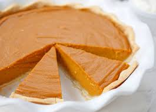

Home
Sweet Potato Pie

Description
Sweet potato pie is a traditional dessert pie originating in the Southern United States. It is often served during the American holiday season, especially at Thanksgiving and Christmas, in place of pumpkin pie, which is more traditional in other regions of the United States.(wikipedia)
Ingredients
- 1 deep dish(9-inch) pie crust
- 2 lb(≈907g) sweet potatoes
- 6 tbsp(≈85g) salted butter
- ½ cup(≈100g) brown sugar
- ⅓ cup(≈67g) granulated sugar
- ⅓ cup(≈80ml) evaporated milk
- 1 tsp(≈5ml) vanilla extract
- ½ tsp(≈1.3g) cinnamon
- ¼ tsp(≈0.5g) nutmeg
- 1 pinch(<1g) salt
- 2 (≈100ml when cracked) eggs